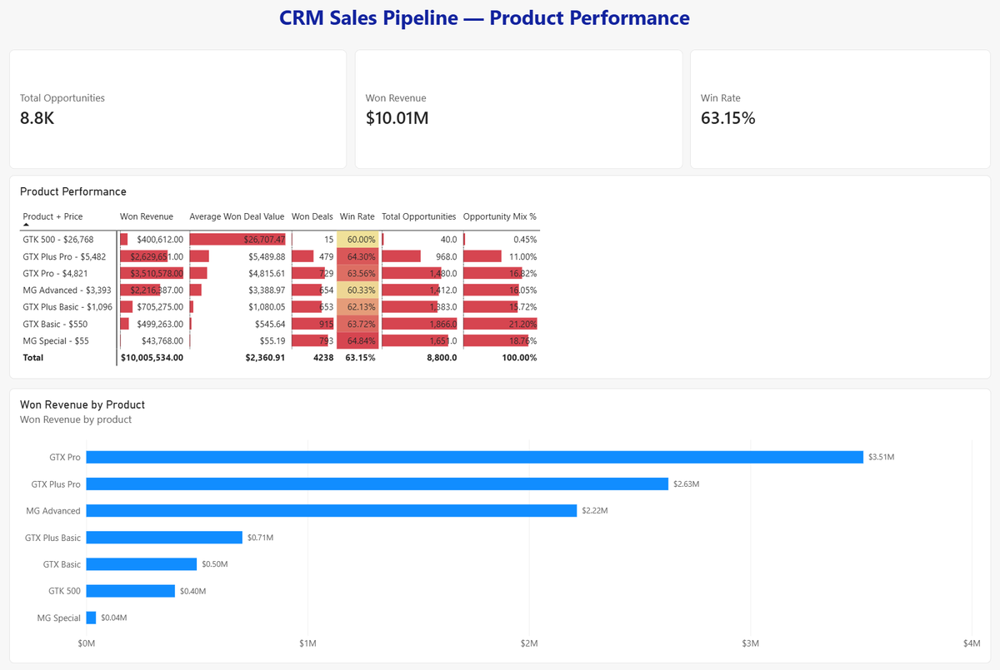

POWER BI REPORT PREVIEW

01 FEATURED CASE STUDYCRM Sales Pipeline
CRM Sales Pipeline
Analysis
Why do some agents and teams generate more revenue? I used Power BI to compare opportunity volume, conversion and product mix across 8,800 opportunities in a fictional B2B CRM dataset.
$10.01MWon revenue analysed4Business questions
Power BIPower QueryDAXData modelling
Read the full case study